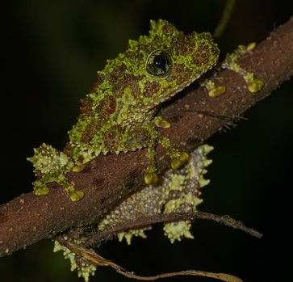
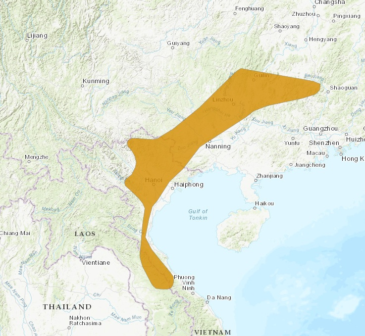

Nome popular sugerido: Rã-musgo-vietnamita e Rã-de-Tonkin-de-olhos-esbugalhados
Rã da espécie Theloderma corticale

(“Vietnamese mossy frog,” 2016)Como o próprio nome sugere, o sapo musgo vietnamita vive no Vietnã; especificamente no norte do Vietnã, uma região definida por falésias de calcário e florestas tropicais perenes. Rãs musgosas vietnamitas são encontradas em cavernas inundadas e nas margens de riachos de montanha rochosos a elevações de 2.300 a 3.280 pés (700 a 1.000 metros). Esta espécie semi-aquática passa grande parte do tempo escondida na água sob rochas e plantas flutuantes. Eles também se ligarão a fendas de rocha, parecendo ser musgo.
(“Vietnamese mossy frog,” 2016)Elas se assemelham muito a um aglomerado de musgo graças à sua cor verde, manchas pretas e tubérculos e espinhas visíveis, se escondendo em bacias de água encontradas em fendas com apenas os olhos se projetando para manter um olho atento em seus arredores. Como resultado, são quase impossíveis de detectar quando estão parados. Os machos têm um calo de reprodução pronunciado na base do dedo interno.
(“Vietnamese mossy frog,” 2016)Elas caçam e comem grandes insetos, como grilos e baratas
(“Vietnamese mossy frog,” 2016)